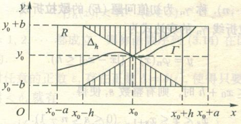

ODE 一般理论：存在性定理
Preliminaries
Lipschitz 条件： \(f(x, y)\) 关于 \(y\) 在 \(D\) 满足 Lipschitz 条件
\[
|f(x, y_1) - f(x, y_2)| \leqslant L |y_1 - y_2|, \quad \forall (x, y_1), (x, y_2) \in D
\]
注：若 \(f(x, y)\) 在凸域 \(D\) 有
\[
\left| \frac{\partial f}{\partial y} \right| \leqslant L
\]
则根据 Lagrange 中值定理，\(f(x, y)\) 满足 Lipschitz 条件
\[
|f(x, y_1) - f(x, y_2)| = \left| \frac{\partial f}{\partial y}(x, \xi) \right| |y_1 - y_2| \leqslant L |y_1 - y_2|
\]
Picard 存在唯一性定理
Picard 存在唯一性定理
如果 \(f(x, y)\) 在闭矩形域
\[
R := \{(x; y) : |x - x_0|\leqslant a, |y - y_0|\leqslant b\}
\]
上连续，且关于变量 \(y\) 满足 Lip 条件，则下述初值问题
\[
\begin{cases}
\frac{\mathrm{d}y}{\mathrm{d}x} = f(x, y)\\
y(x_0) = y_0
\end{cases}
\]
在区间 \(I = [x_0 - h; x_0 + h]\) 上存在唯一解 \(y = \varphi(x)\) ，其中
\[
h = \min\left\{a, \frac{b}{M}\right\}, \quad M = \max_{(x, y) \in R} |f(x, y)|
\]
由于闭矩形域连续，这里 \(M\) 的存在性是可以保证的。
解的存在区间与 \(M\) 相对 \(a, b\) 的大小有关。
- \(M\) 相对 \(a, b\) 比较小：积分曲线更容易碰到左右边界，\(h=a\)
- \(M\) 相对 \(a, b\) 比较大：积分曲线更容易碰到上下边界，\(h<a\)

Picard 定理的证明
原初值问题等价于以下方程
\[
y = y_0 + \int_{x_0}^x f(x, y) \mathrm{d}x
\]
- 构造 Picard 函数列 \(\{y_n\}\)，迭代逼近 \(y\)
- 再证 Picard 函数列在 \(I\) 上一致收敛，结合 \(f(x, y)\) 的连续性，可知 Picard 函数列积分与极限的可交换性
- 因此可证 \(\{y_n\}\) 的极限函数就是原初值问题的解
- 最后证明解的唯一性
构造 Picard 函数列
令 \(y_0(x) = y_0\)，
\[
y_n(x) = y_0 + \int_{x_0}^x f(t, y_{n-1}(t)) \mathrm{d}t
\]
所定义的就是 Picard 函数列。
Picard 函数列的每一项是否良定义 ?
关键在于，\(f(x, y)\) 定义于闭矩形域，需要验证 \(y_{n-1}(t)\) 是否属于 \([y_0-b, y_0+b]\)。
Proof
\(y_0(x)=y_0\) 良定义。考虑 \(y_1\)
\[
\begin{aligned}
|y_1(x) - y_0|
& = \left| \int_{x_0}^x f(t, y_0) \mathrm{d}t \right|\\
&\leqslant M |x - x_0| \leqslant M h \leqslant b
\end{aligned}
\]
递归考虑，或者使用正式的数学归纳就可以证明。
易见得，Picard 函数列每一项都在 \(I\) 连续。
证明一致收敛
数学归纳可以证明，在 \(I\) 上有
\[
|y_n(x)-y_{n-1}(x)| \leqslant \frac{L^{n-1}M}{n!}|x-x_0|^n=\frac{M}{L}\frac{(L|x-x_0|)^n}{n!}
\]
Proof
\[
\begin{aligned}
|y_n(x)-y_{n-1}(x)|
& = \left| \int_{x_0}^x [f(t, y_{n-1}(t)) - f(t, y_{n-2}(t))]\mathrm{d}t \right|\\
&\leqslant \left|\int_{x_0}^x L|y_{n-1}(t) - y_{n-2}(t)| \mathrm{d}t\right|\\
&\leqslant L \left|\int_{x_0}^x \frac{L^{n-2}M}{(n-1)!}|t-x_0|^{n-1} \mathrm{d}t\right|\\
&= \frac{L^{n-1}M}{n!}|x-x_0|^n\\
\end{aligned}
\]
取 \(e^x\) 的泰勒级数作为优级数，则根据优级数判别法可以证明以下级数在 \(I\) 上一致收敛
\[
S_n(x)=y_0(x) + \sum_{n=1}^{+\infty} (y_n(x)-y_{n-1}(x))
\]
也就证明了 Picard 函数列在 \(I\) 上一致收敛，有极限函数
\[
\varphi(x) = \lim_{n \to \infty} y_n(x),\quad x \in I
\]
特别地，一致连续结合 Picard 函数列每一项的连续性，可以证明 \(\varphi(x)\) 在 \(I\) 上连续。当然，后续能够直接证明它是解，那甚至就可微了。
存在唯一性
存在性
已经证明了
\[
y_n(x)\rightrightarrows\varphi(x),\quad x\in I
\]
根据 Lip 性质，可以得到
\[
f(x,y_n(x))\rightrightarrows f(x,\varphi(x)),\quad x\in I
\]
Proof
\(\forall \varepsilon>0\), \(\exists N(\varepsilon)\), 当 \(n>N(\varepsilon)\) 时，\(\forall x\in I\) 有
\[
|y_n(x)-\varphi(x)|<\frac{\varepsilon}{L}
\]
因此
\[
|f(x,y_n(x))-f(x,\varphi(x))|\leqslant L|y_n(x)-\varphi(x)|<\varepsilon
\]
由于
\[
\begin{aligned}
\varphi(x)
&=\lim _{n \rightarrow \infty} y_{n}(x) \\
&=y_{0}+\lim _{n \rightarrow \infty} \int_{x_{0}}^{x} f(t, y_{n-1}(t)) \mathrm{d} t \\
&=y_{0}+\int_{x_{0}}^{x} \lim _{n \rightarrow \infty} f(t, y_{n-1}(t)) \mathrm{d} t \\
&= y_0 + \int_{x_0}^x f(t, \varphi(t)) \mathrm{d}t
\end{aligned}
\]
积分符号与极限交换利用了一致连续的性质，极限符号进入 \(f\) 则利用了 \(f\) 的连续性。
因此证明了 \(\varphi(x)\) 是原初值问题的连续解。
唯一性
设 \(\psi(x)\) 是原初值问题的另一个解，则
\[
\begin{aligned}
|\varphi(x) - \psi(x)|
&= \left| \int_{x_0}^x f(t, \varphi(t)) \mathrm{d}t - \int_{x_0}^x f(t, \psi(t)) \mathrm{d}t \right|\\
&\leqslant \left|\int_{x_0}^x |f(t, \varphi(t)) - f(t, \psi(t))| \mathrm{d}t\right|\\
&\leqslant L \left|\int_{x_0}^x |\varphi(t) - \psi(t)| \mathrm{d}t\right|
\end{aligned}
\]
Prove \(\varphi(x)=\psi(x)\)
令 \(F(x)=\int_{x_0}^x |\varphi(t) - \psi(t)| \mathrm{d}t\)，则
\[
F'(x) = |\varphi(x) - \psi(x)| \leqslant L F(x)
\]
改成等号，其解为 \(F(x)=Ae^{Lx}\)
考虑
\[
\left( F(x)e^{-Lx} \right)' = e^{-Lx}F'(x) - L F(x) e^{-Lx} \leqslant 0
\]
可知 \(F(x)e^{-Lx}\) 递减，\(x\geqslant x_0\) 时有
\[
F(x)e^{-Lx} \leqslant F(x_0)e^{-Lx_0} = 0 \quad (F(x_0)=0)
\]
然而 \(F(x)\geqslant 0\)，所以得到 \(x\geqslant x_0\) 时 \(F(x)=0\)。同理 \(x < x_0\)，则得证。
\(\varphi(x)\) 和 \(\psi(x)\) 都是解，所以都连续（甚至可微），所以 \(|\varphi(x) - \psi(x)|\) 也连续，那么在闭区间 \(I\) 上有界。取其绝对值上界 \(K\)，有
\[
|\varphi(x) - \psi(x)| \leqslant L \left|\int_{x_0}^x |\varphi(t) - \psi(t)| \mathrm{d}t\right|\leqslant LK|x-x_0|
\]
下面进行一个套娃，有
\[
|\varphi(x) - \psi(x)| \leqslant L \left|\int_{x_0}^x |\varphi(t) - \psi(t)| \mathrm{d}t\right|\leqslant \frac{L^2K}{2}|x-x_0|^2
\]
以此类推，有
\[
|\varphi(x) - \psi(x)| \leqslant \frac{L^nK}{n!}|x-x_0|^n
\]
这里可以通过幂级数收敛证明通项的极限为 0
令 \(n\to \infty\)，有 \(|\varphi(x) - \psi(x)|=0\)，即 \(\varphi(x)=\psi(x)\)。
Remark
- 事实上，Picard 定理条件中 Lip 条件即使去掉，也能保证解的存在性
- Lip 条件在这里用于保证解的唯一性（充分条件），但并不是必要条件
Peano 存在定理
Peano 存在定理
如果 \(f(x, y)\) 在闭矩形域
\[
R := \{(x; y) : |x - x_0|\leqslant a, |y - y_0|\leqslant b\}
\]
上连续，则下述初值问题
\[
\begin{cases}
\frac{\mathrm{d}y}{\mathrm{d}x} = f(x, y)\\
y(x_0) = y_0
\end{cases}
\]
在区间 \(I = [x_0 - h; x_0 + h]\) 上至少存在一个连续可微解 \(y = \varphi(x)\) ，其中
\[
h = \min\left\{a, \frac{b}{M}\right\}, \quad M = \max_{(x, y) \in R} |f(x, y)|
\]